2
→
▶
2
→
▶
「アベンジャーズ／ドゥームズデイ」本予告編｜12月18日(金)劇場公開｜MARVEL(マーベル)
マーベル公式 · 1,853,022再生 · 公開 11/24
2
→
▶
マーベル公式 · 1,853,022再生 · 公開 11/24
 3
▲3
▶
3
▲3
▶
ブラックナイト山田 · 263,303再生 · 公開 11/24
 5
→
▶
5
→
▶
Japan Sci-Fi 【SF解説・創作】 · 106,190再生 · 公開 11/24
 6
▲3
▶
6
▲3
▶
ドズル社 · 282,867再生 · 公開 11/24
 8
→
▶
8
→
▶
GAOU CINEMATIC STUDIOS【アメコミ映画最新情報紹介チャンネル】 · 57,317再生 · 公開 11/24
 9
▼6
▶
9
▼6
▶
ウォーターチャレンジ · 275,915再生 · 公開 11/24
 11
→
▶
11
→
▶
サイ-SYK CHANNEL- · 57,616再生 · 公開 11/24
 12
▲6
▶
12
▲6
▶
葉ちゅべ · 218,524再生 · 公開 11/24
 14
初登場
▶
14
初登場
▶
Subaru Ch. 大空スバル · 425,921再生 · 公開 11/25
 15
初登場
▶
15
初登場
▶
NOT EQUAL ME ノットイコールミー 公式チャンネル · 87,200再生 · 公開 11/24
 16
▲6
▶
16
▲6
▶
レトルト · 232,096再生 · 公開 11/24
 18
▲18
▶
18
▲18
▶
加藤純一ロードショー · 122,347再生 · 公開 11/24
 19
▼9
▶
19
▼9
▶
IVE · 1,347,127再生 · 公開 11/23
 20
▼8
▶
20
▼8
▶
たいじ/たいちゃんねる · 273,940再生 · 公開 11/24
 22
初登場
▶
22
初登場
▶
ポッキー · 122,276再生 · 公開 11/24
 24
初登場
▶
24
初登場
▶
hololive Dreams ホロライブドリームス · 389,228再生 · 公開 11/24
 26
▼6
▶
26
▼6
▶
マエスケ · 185,047再生 · 公開 11/24
 28
初登場
▶
28
初登場
▶
ゆうこる/Yuukoru · 216,236再生 · 公開 11/25
 30
初登場
▶
30
初登場
▶
Shadowverse Channel · 171,621再生 · 公開 11/24
 32
初登場
▶
32
初登場
▶
キャベツの人【ゲーム紹介】 · 213,710再生 · 公開 11/24
 34
▼20
▶
34
▼20
▶
しいちゃんねる · 187,784再生 · 公開 11/24
 36
▲6
▶
36
▲6
▶
SAWAYAN GAMES / サワヤン ゲームズ · 136,180再生 · 公開 11/24
 38
初登場
▶
38
初登場
▶
Pekora Ch. 兎田ぺこら · 247,924再生 · 公開 11/25
 39
▼22
▶
39
▼22
▶
ME:I · 40,367再生 · 公開 11/24
 40
初登場
▶
40
初登場
▶
布団ちゃん切り抜きMAX · 118,152再生 · 公開 11/24
 42
初登場
▶
42
初登場
▶
ぴくとはうす · 99,869再生 · 公開 11/24
 43
▼10
▶
43
▼10
▶
SHOW-WA · 21,342再生 · 公開 11/24
 44
▼10
▶
44
▼10
▶
がみくん · 192,885再生 · 公開 11/24
 46
▼20
▶
46
▼20
▶
牛沢 · 190,807再生 · 公開 11/24
 48
▼32
▶
48
▼32
▶
プレイヤーキル大好きプレイヤー · 769,213再生 · 公開 11/23
 50
初登場
▶
50
初登場
▶
Watame Ch. 角巻わため · 242,366再生 · 公開 11/25
 1
→
▶
1
→
▶
Mrs. GREEN APPLE · 2,537,822再生 · 公開 11/23
 4
初登場
▶
4
初登場
▶
Stray Kids Japan Official YouTube · 805,830再生 · 公開 11/25
 7
初登場
▶
7
初登場
▶
NEARLY EQUAL JOY ニアリーイコールジョイ 公式チャンネル · 94,112再生 · 公開 11/24
 10
▼6
▶
10
▼6
▶
なにわ男子 · 1,269,080再生 · 公開 11/22
 13
初登場
▶
13
初登場
▶
timelesz - Topic · 11,278再生 · 公開 11/25
 17
▼10
▶
17
▼10
▶
LDH JAPAN · 254,156再生 · 公開 11/23
 21
初登場
▶
21
初登場
▶
Hikaru Utada · 51,117再生 · 公開 11/25
 23
▲6
▶
23
▲6
▶
MIMI · 101,262再生 · 公開 11/24
 25
初登場
▶
25
初登場
▶
Tele - Topic · 5,307再生 · 公開 11/24
 27
▼14
▶
27
▼14
▶
MAN WITH A MISSION - Topic · 39,254再生 · 公開 11/24
 29
▼6
▶
29
▼6
▶
ENHYPEN · 213,061再生 · 公開 11/24
 31
▼4
▶
31
▼4
▶
STARGLOW Official · 82,866再生 · 公開 11/24
 33
初登場
▶
33
初登場
▶
PUPPET SUNSUN - Topic · 6,834再生 · 公開 11/24
 35
▼20
▶
35
▼20
▶
KAITO · 790,167再生 · 公開 11/23
 37
▲6
▶
37
▲6
▶
TOMORROW X TOGETHER OFFICIAL · 132,076再生 · 公開 11/24
 41
▼22
▶
41
▼22
▶
まふまふちゃんねる · 279,201再生 · 公開 11/23
 45
▼20
▶
45
▼20
▶
Hatsuboshi Gakuen - Topic · 148,789再生 · 公開 11/23
 47
▼26
▶
47
▼26
▶
BUMP OF CHICKEN · 412,920再生 · 公開 11/22
 49
初登場
▶
49
初登場
▶
BUCK-TICK · 24,341再生 · 公開 11/25
Infoseek · 24 Nov
 820万回
NEW
820万回
NEW
ねとらぼ · 24 Nov · @iamsimplytiffany ♥771,434
ニコニコニュース · 24 Nov · @iamsimplytiffany ♥771,435
Excite エキサイト · 23 Nov
 520万回
520万回
Yahoo!ニュース · 23 Nov · @theozziechronicles ♥268,541
 260万回
NEW
260万回
NEW
Yahoo!ニュース · 24 Nov · @kohei_life_travel ♥138,834
 116万回
116万回
ニコニコニュース · 23 Nov · @miro_ouchiphoto.diy ♥9,995
 92万回
92万回
Excite エキサイト · 23 Nov
 80万回
NEW
80万回
NEW
Yahoo!ニュース · 24 Nov · @takuwannofishinglife ♥4,434
 63万回
NEW
63万回
NEW
ライブドアニュース · 23 Nov
Excite エキサイト · 23 Nov
au Webポータル · 23 Nov
 33万回
NEW
33万回
NEW
ライブドアニュース · 24 Nov
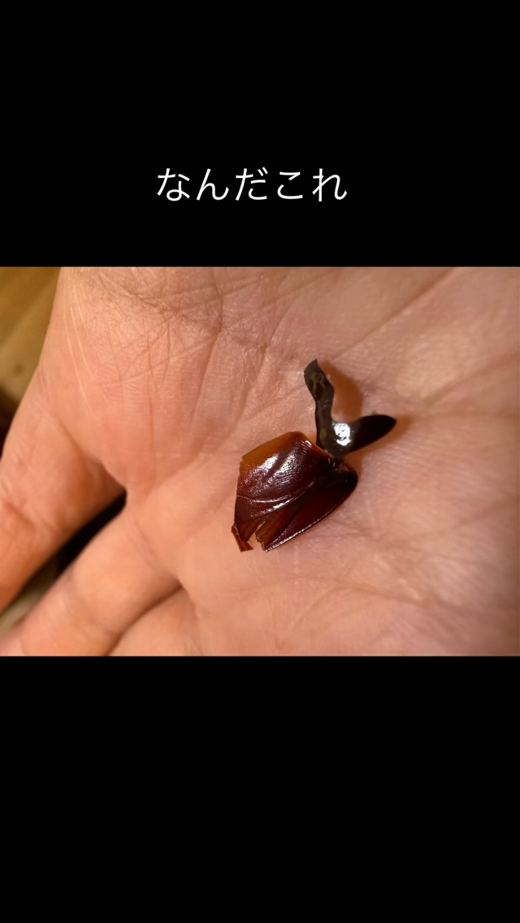
31万回 NEWYahoo!ニュース · 24 Nov · @86na_no.to ♥453
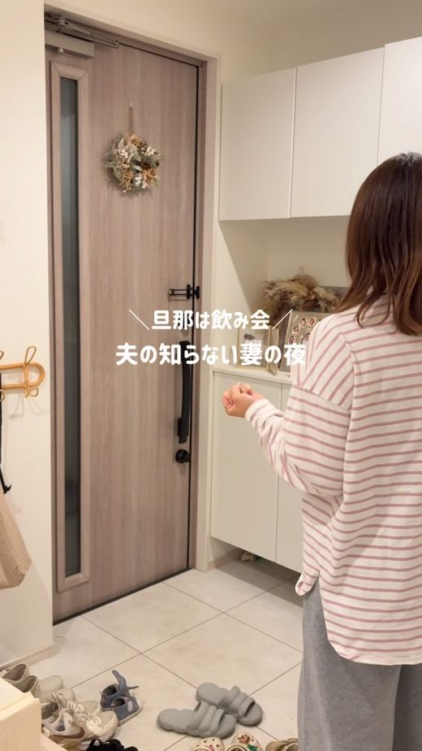
18万回 NEWニコニコニュース · 23 Nov · @asalog__
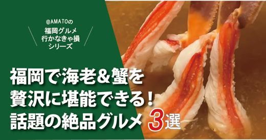
NEWフクリパ · 24 Nov
ｄメニューニュース · 24 Nov
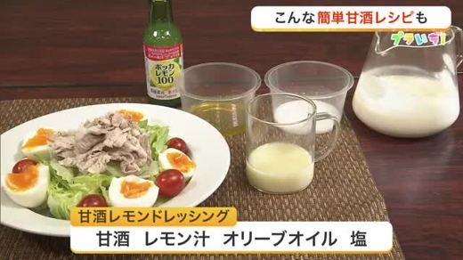
NEWｄメニューニュース · 24 Nov
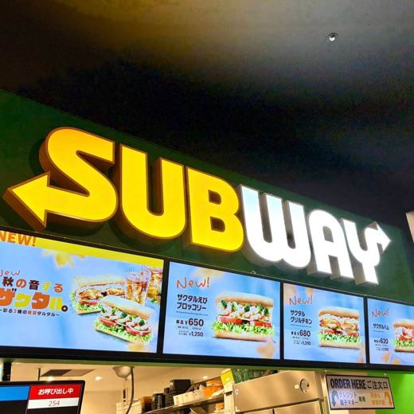
NEWTRILL · 24 Nov
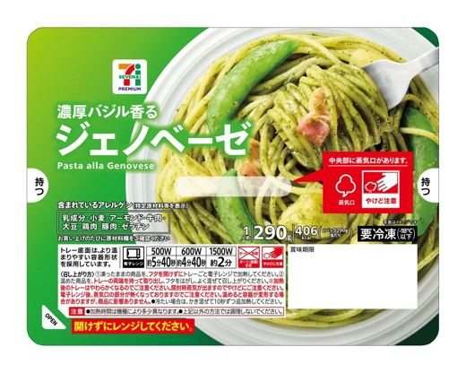
NEWau Webポータル · 24 Nov
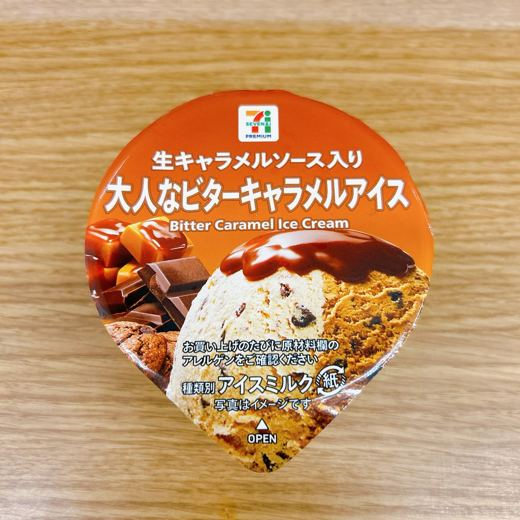
NEWau Webポータル · 24 Nov · @ice_tokko ♥71
MAQUIA · 24 Nov
MAQUIA · 24 Nov
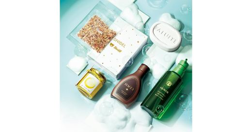
NEWMAQUIA · 24 Nov
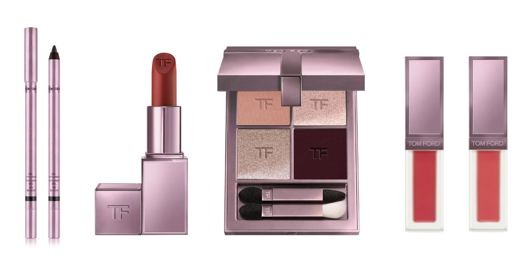
NEWMAQUIA · 24 Nov
MAQUIA · 24 Nov
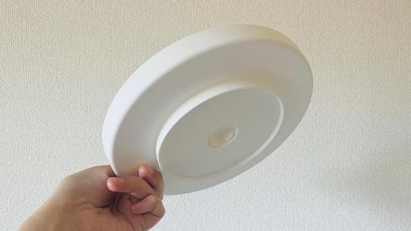
NEWYahoo!ニュース · 24 Nov
Yahoo!ニュース · 24 Nov
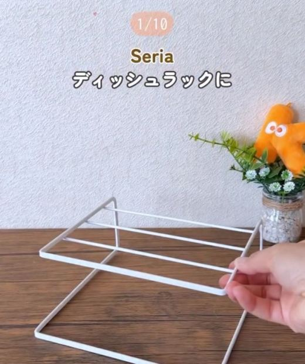
NEWライブドアニュース · 24 Nov
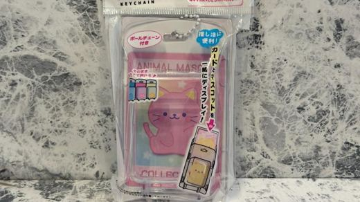
NEWYahoo!ニュース · 24 Nov
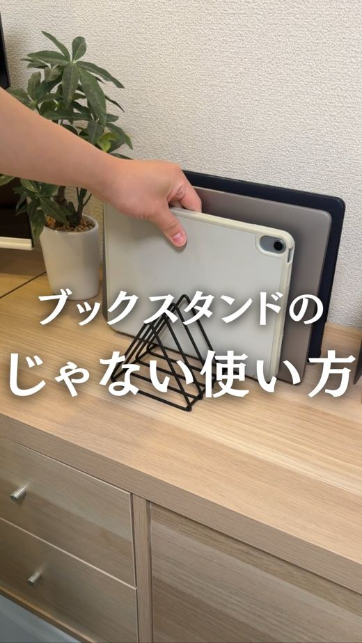
Yahoo!ニュース · 23 Nov · @ken_.kurashi ♥4,324
ねとらぼ · 23 Nov
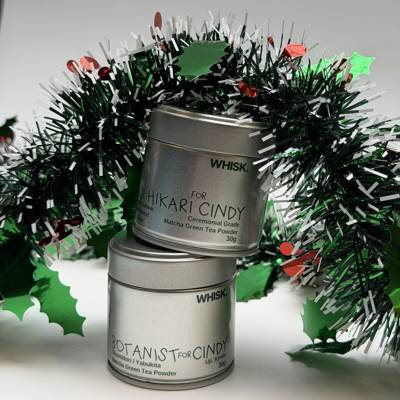
11/24 17:11 🗼 神奈川マストリー合同会社のプレスリリース ご連絡を受けて名前を刻印し、国内配送でお届け。客室での贈り物や、チェックアウト時の記念品に
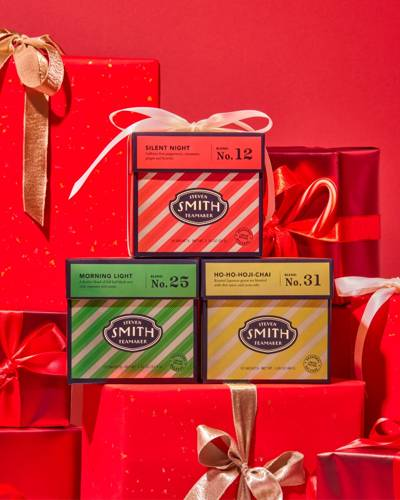
11/24 16:00 🗼 東京東洋べバレッジ株式会社のプレスリリース 「No.31 Ho Ho Hoji-Chai」「No.25 Morning Light」
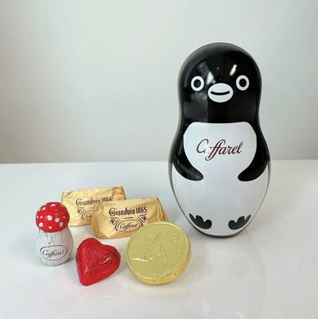
11/24 15:08 🗼 東京株式会社山本商店のプレスリリース 2027年3月末で販売終了となるSuicaのペンギン×カファレル「Suicaのペンギンピッコロ
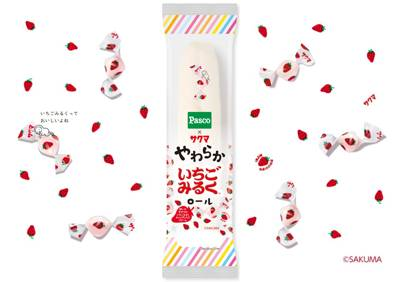
11/24 15:00 🗼 東京敷島製パン株式会社のプレスリリース 敷島製パン株式会社（Pasco）は、「やわらかいちごみるくロール」を2026年12月1日（火
株式会社Cake.jpのプレスリリース ケーキ・スイーツ専門通販サイト「Cake.jp（ケーキジェーピー）」を運営する株式会社C
森永製菓株式会社のプレスリリース 「The BREAKFAST HOTEL」の4施設にてオリジナル甘酒スムージーを11月25日よ
株式会社ロッテのプレスリリース 株式会社ロッテ(東京都新宿区、代表取締役社長執行役員：中島英樹、以下ロッテ)は、『推し活向け』『
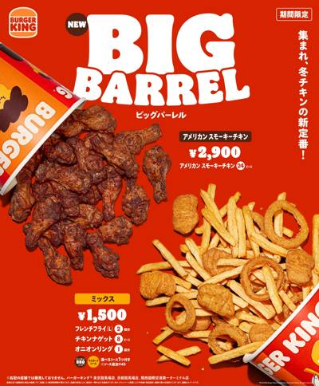
11/24 13:00 🗼 東京株式会社ビーケー・ジャパンのプレスリリース 11月27日（金）より期間限定で発売 株式会社ビーケー・ジャパン（本社：東京都千代
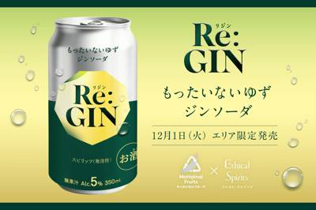
11/24 12:00 🗼 東京株式会社ドールのプレスリリース 2026年12月1日（火）より、ファミリーマート一部店舗にて数量限定発売 株式会社ドール（東京
チロルチョコ株式会社のプレスリリース 2026年12月7日（月）より全国のダイソーで順次発売 チロルチョコ株式会社（東京都千代田
株式会社亀屋万年堂のプレスリリース 株式会社亀屋万年堂（本社・工場：神奈川県横浜市都筑区 / 総本店：東京都目黒区自由が丘）は、
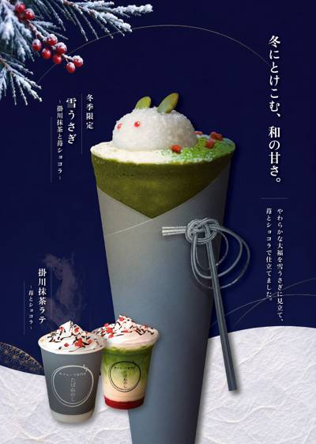
11/24 11:00 🗼 東京和クレープ専門店 たばねのしのプレスリリース 東京浅草が本店の和クレープ専門店「浅草茶屋たばねのし」から、冬の季節限定商品のお知
株式会社カヤックのプレスリリース 2種類のキャラメルソースと黒糖の隠し味で、デザートのような味わいに！パッケージはファンクミュー
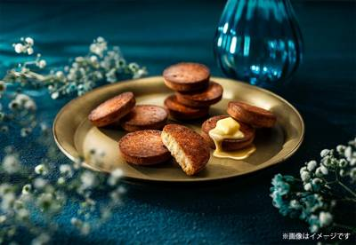
11/24 10:20 🗼 東京株式会社グレープストーンのプレスリリース 2026年12月1日(火)ブリュレメリゼ 東京ギフトパレット店で販売開始 株式会社グレ
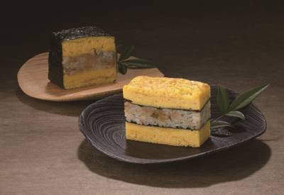
11/24 10:00 🗼 東京株式会社久原本家のプレスリリース 「つきぢ松露」の厚焼き玉子×茅乃舎のいなり寿司が融合したテイクアウト第2弾 久原本家グループ
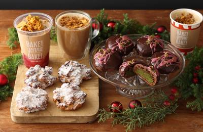
11/24 10:00 🗼 東京アイビーカンパニー株式会社のプレスリリース 11月25日（水）新発売 アイビーカンパニー株式会社（本社：東京都渋谷区千駄ヶ谷／代
株式会社ペンギンのプレスリリース 寒い日こそ楽しみたい！冬限定の新作パン3品を12月1日より発売 株式会社ペンギン（本社：北海道
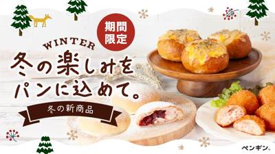
11/24 09:00 🗼 東京株式会社ペンギンのプレスリリース 寒い日こそ楽しみたい！冬限定の新作パン3品を12月1日より発売 株式会社ペンギン（本社：北海道
日本ケンタッキー・フライド・チキン株式会社のプレスリリース 日本ケンタッキー・フライド・チキン株式会社(社長：名嶋 篤史、本社
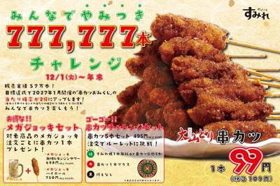
11/24 16:49 🌐 全国株式会社ダイニングイノベーションのプレスリリース 株式会社すみれ（所在地：東京都渋谷区／代表取締役：湯澤忠則）が展開する「やきと
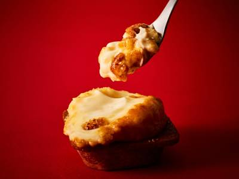
11/24 16:25 🚄 北海道北海道コンフェクトグループ株式会社のプレスリリース ほろ苦いブリュレとザクザククッキーがアクセント。解凍時間で変わる食感も楽しめ
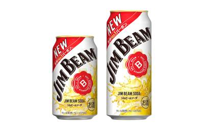
11/24 16:10 🚄 愛媛サントリーホールディングス株式会社のプレスリリース サントリー（株）は、「ジムビームソーダ缶」を１２月中旬以降順次、全国でリニュ
株式会社はらぺこのプレスリリース 連載は、2026年11月30日（月）発売号より。連載開始に先立ち、俳優・窪塚洋介さんとの「異彩
ほっともっとのプレスリリース 株式会社プレナスは、持ち帰り弁当の「Hotto Motto (ほっともっと)」を、2026年10月
株式会社メリーチョコレートカムパニーのプレスリリース ～2026年12月23日（水）より予約開始～ チョコレートをはじめとする贈
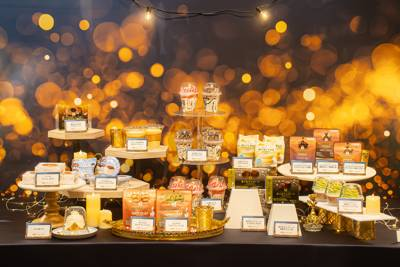
11/24 15:00 ❓ 不明株式会社セブン‐イレブン・ジャパンのプレスリリース 〜土屋公二シェフが開発のこだわりを語り、自分時間を楽しむ「お部屋タイプ診断」
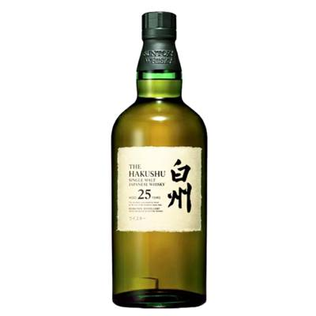
11/24 15:00 ❓ 不明株式会社アップライジングのプレスリリース 白州25年・白州18年・白州シングルモルトが登場。1口5,980円（税込・送料無料）で
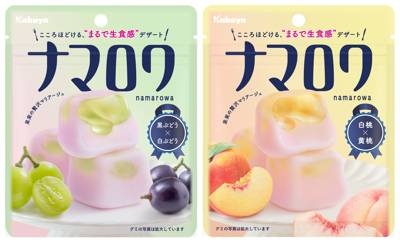
11/24 15:00 ❓ 不明カバヤ食品株式会社のプレスリリース 購入者の8割以上が“ほどける食感”“ご褒美感”“贅沢感”を評価、くつろぎ時間に楽しむデザート
株式会社プレナスのプレスリリース 11.24(火)より公開 株式会社プレナスは、持ち帰り弁当の「Hotto Motto (ほっと
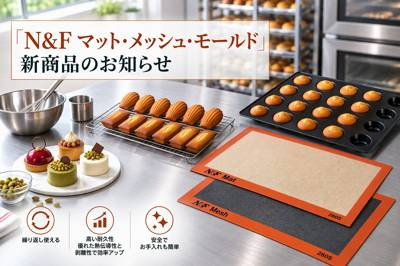
11/24 15:00 ❓ 不明日仏商事株式会社のプレスリリース 繰り返し使える耐久性や優れた型離れを実現。製造工程の効率化と安定生産に貢献する製菓・製パン向け
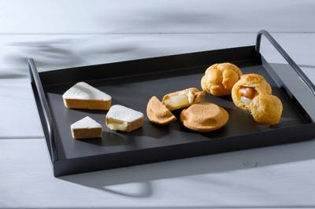
11/24 14:10 ❓ 不明竹内製菓株式会社のプレスリリース 1949年創業の竹内製菓が、羽二重餅とワッフルクッキーで培った技術を応用。11月27日、JR金
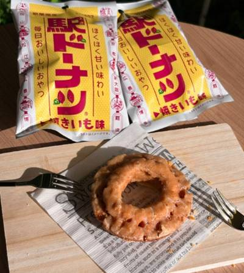
11/24 14:10 🚄 西日本西日本旅客鉄道株式会社のプレスリリース アイデアパッケージ株式会社と株式会社ジェイアール西日本デイリーサービスネットが連携して登
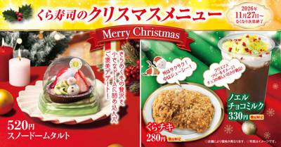
11/24 14:00 🌐 全国くら寿司株式会社のプレスリリース ワクワクを閉じ込めたクリスマス限定スイーツが登場！ KURA ROYAL「スノードームタルト」
株式会社 明治のプレスリリース 株式会社 明治（代表取締役社長：八尾 文二郎）は、「原材料、乳製品のみ」で作られた国内初※1の
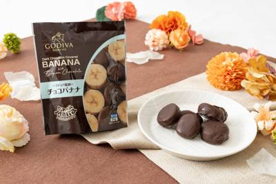
11/24 14:00 ❓ 不明株式会社セブン‐イレブン・ジャパンのプレスリリース ～ベルギー産チョコレート使用！解凍いらずで冷凍のまま楽しめる贅沢スイーツ～
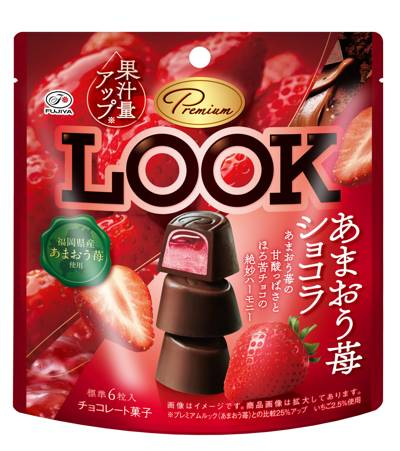
11/24 14:00 🌐 全国株式会社不二家のプレスリリース プレミアムルック（あまおう苺ショコラ）パウチ」2026年12月1日（火）／「ショコラウェファース
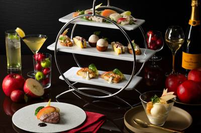
11/24 14:00 🚄 大阪森トラスト・ホテルズ＆リゾーツ株式会社のプレスリリース ～ヴーヴ・クリコなどをフリーフローで楽しむ、りんごと和のスパイスのマリア
西日本旅客鉄道株式会社のプレスリリース 1949年創業の竹内製菓が、羽二重餅とワッフルクッキーで培った技術を応用。11月27日、
株式会社 メガハウスのプレスリリース 2026年11月下旬発売 株式会社メガハウス（バンダイナムコグループ 本社：東京都千代田
トーラク株式会社のプレスリリース トーラク株式会社（本社：兵庫県神戸市東灘区向洋町西5丁目5番、代表取締役社長：毛利 功一郎）は
株式会社伊藤米穀のプレスリリース 創業86年、名古屋の老舗米穀店の三代目・五ツ星お米マイスターが企画。玄米100%の杵つき餅を、
株式会社日本セレモ二ーのプレスリリース 愛グループ専属パティシエが開発・監修。クリスマスや年末年始、大切な人と過ごす冬のひととき
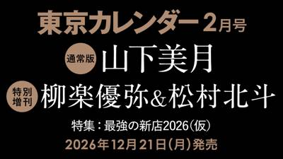
11/24 13:10 ❓ 不明東京カレンダー株式会社のプレスリリース 東京カレンダー株式会社（本社：東京都品川区、代表取締役：坂下 陽子）は、2026年12月
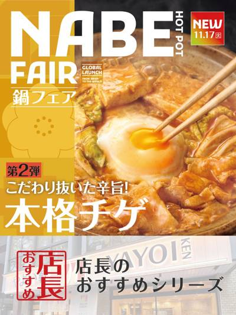
11/24 13:00 🌐 全国株式会社プレナスのプレスリリース 1位は「コチュジャンの旨みと辛さのバランス」 株式会社プレナスは、定食レストラン「やよい軒」
ほっともっとのプレスリリース 株式会社プレナスは、持ち帰り弁当の「Hotto Motto (ほっともっと)」を、2026年10月
株式会社セブン‐イレブン・ジャパンのプレスリリース ～年末の華やぐ気分を彩る冬の新作炭酸飲料が登場～ 株式会社セブン‐イレブン
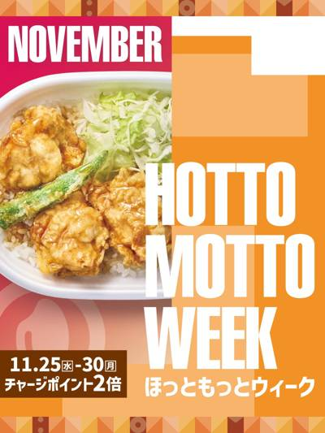
11/24 13:00 ❓ 不明株式会社プレナスのプレスリリース 11.25(水)～11.30(月)の期間開催 株式会社プレナスは、持ち帰り弁当の「Hotto
株式会社セブン‐イレブン・ジャパンのプレスリリース ～12月3日（木）より全国のセブン-イレブンで順次販売開始～ 株式会社セブ
食ライフデザイン株式会社のプレスリリース ひえ・あわ・いなきびを組み合わせ、毎日のごはんに取り入れやすく。マイ穀ストアから、雑穀
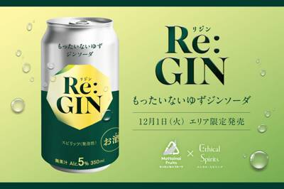
11/24 12:00 ❓ 不明エシカル・スピリッツ株式会社のプレスリリース 2026年5月に発売した果汁を搾った後に廃棄されていたゆずの皮をキーボタニカルとし
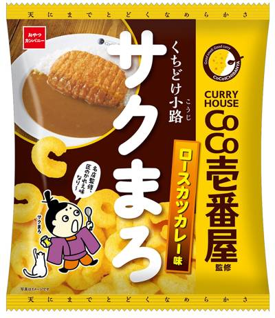
11/24 11:30 🚄 愛知株式会社壱番屋のプレスリリース －11月23日より期間限定で販売－ 株式会社壱番屋（本社：愛知県一宮市、代表取締役社長 葛原
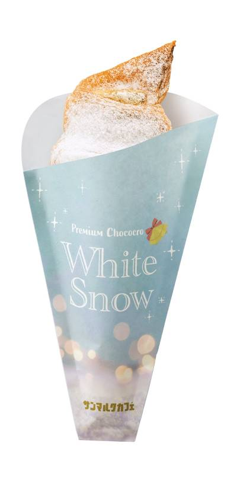
11/24 11:00 ❓ 不明株式会社サンマルクカフェのプレスリリース 株式会社サンマルクカフェ（京都本社：京都市下京区 代表取締役社長：小山典孝）は、冬の
ＵＨＡ味覚糖株式会社のプレスリリース UHA味覚糖株式会社（本社：大阪市中央区、代表取締役：山田泰正）は、着せ替え人形「リカちゃ
スターバックスコーヒージャパン株式会社のプレスリリース 『EXTRA Collection』第5弾 スターバックス コーヒー ジ
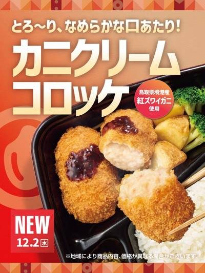
11/24 11:00 🚄 鳥取ほっともっとのプレスリリース 株式会社プレナスは、持ち帰り弁当の「Hotto Motto (ほっともっと)」を、2026年10月
D&Nコンフェクショナリー株式会社のプレスリリース 羽田空港ANA FESTA各店にて12月1日(火)新発売！ 株式会社
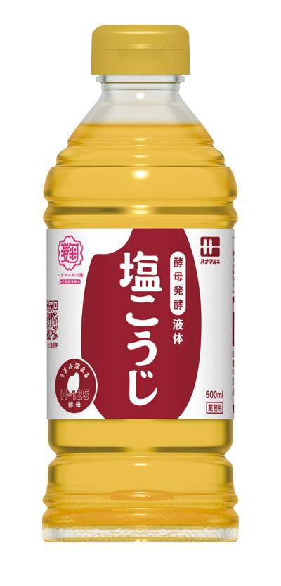
11/24 11:00 ❓ 不明ハナマルキ株式会社のプレスリリース ～５か国目の特許取得。独自の酵母発酵技術で、酒精無添加・白濁抑制を実現～ 味噌・醸造製品メー
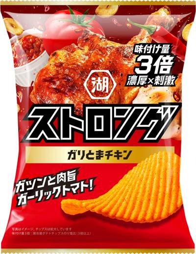
11/24 11:00 ❓ 不明株式会社湖池屋のプレスリリース 新商品が当たる！発売記念SNSキャンペーンも実施 株式会社湖池屋（社長：佐藤章）は、濃厚な味わい
株式会社 明治のプレスリリース 株式会社 明治（代表取締役社長：八尾 文二郎）は、ロングセラーブランド「アーモンドチョコレート
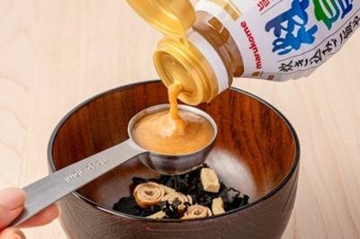
11/24 11:00 🌐 全国マルコメ株式会社のプレスリリース マルコメ株式会社（本社：長野市、代表取締役社長：青木時男）は、11月24日「和食の日」に合わせ
C-United株式会社のプレスリリース コロワイドグループのC-United株式会社（本社：東京都港区、代表取締役社長：友成
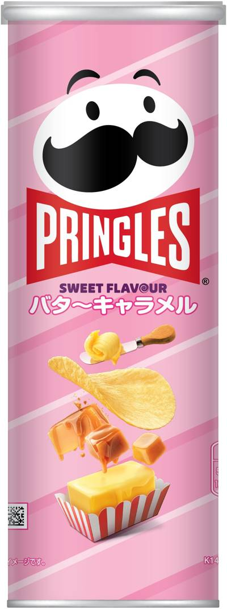
11/24 11:00 ❓ 不明日本ケロッグ合同会社のプレスリリース 冬にぴったりの甘じょっぱい人気フレーバーが今年も登場 バターの風味とキャラメルの甘さが広が
協同乳業株式会社のプレスリリース 2026年12月15日（火）全国発売 協同乳業株式会社（本社：東京都中央区、代表取締役社長：
フジパン株式会社のプレスリリース フジパン株式会社（愛知県名古屋市）は、「フジパンPREMIUM」より「潤rich」シリーズを２
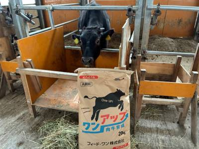
11/24 11:00 ❓ 不明フィード・ワン株式会社のプレスリリース フィード・ワン株式会社(本社：横浜市西区／代表取締役社長 庄司 英洋／以下、フィード・ワ
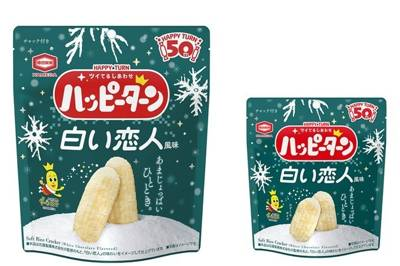
11/24 11:00 ❓ 不明亀田製菓株式会社（本社：新潟県新潟市、代表取締役社長：髙木 政紀、以下亀田製菓）の代表ブランド「ハッピーターン」は、2026年に
全国約90店舗で展開する「MACHI café＋」にて 株式会社ローソン（本社：東京都品川区）が全国約90店舗で展開する「MA
株式会社セブン‐イレブン・ジャパンのプレスリリース 〜11月24日（火）より北海道内のセブン‐イレブンにて順次発売～ 株式会社
株式会社石甚のプレスリリース 品質と価格のバランスを追求した 「I2(アイスクエア)」をロシア企業と共同開発 富山県射水市で住宅
株式会社 八幡屋礒五郎のプレスリリース みかんの香りと食感、陳皮（ちんぴ）の風味を楽しむ冬のタブレットチョコレート 根元 八幡屋
キタノ商事株式会社のプレスリリース ミラノの中心地で創業したロスティッチェリア(ロースト料理を扱うデリカッセン)から始まったサン
株式会社WABICAのプレスリリース 〜鹿児島県産・有機JAS認証一番茶を使用。30g缶と100gパウチの2サイズで展開〜 株式
株式会社やる気のプレスリリース 濃厚な牛の旨みと贅沢な海の幸、心も体も温まる2つの新商品を2026年12月1日(火)より販売開始
北海道コンフェクトグループ株式会社のプレスリリース 札幌千秋庵の一部直営店にて12月1日(火)より販売スタート 千秋庵製菓株式会
老舗菓子店 株式会社青木屋(本社：東京都府中市、代表取締役：多久島 治)は、黒糖どら焼き「くろどら」をリニューアルし、2026年
三菱食品株式会社のプレスリリース 三菱食品株式会社（東京都文京区）は、噛んで食べるチューイングキャンデー「かむかむ」シリーズから
株式会社グレープストーンのプレスリリース 2026年11月27日(金)より販売開始 株式会社グレープストーン(本社：東京都中央区
ジェイアール東海フードサービス株式会社のプレスリリース 2026年12月1日（火）ぴよりんvillageにて発売 ジェイアール東
株式会社ハチバンのプレスリリース 冬の定番「ちゃんぽん」や新商品「豚うま煮」を加えて「白い８番祭」を開催！12月7日から８番らー
株式会社角川アスキー総合研究所のプレスリリース 濃厚な一杯が続々！新店24店を実食調査、愛知・岐阜・三重・浜松の厳選261杯、グ
株式会社紫野和久傳のプレスリリース 京都・水尾産の柚子果汁を使い、笹に包んだ冬季限定の一品 和久傳は、2026年12月1日(火)
株式会社健康体力研究所のプレスリリース スポーツサプリメントのパイオニアである株式会社健康体力研究所(所在地：東京都文京区、以下
株式会社すかいらーくホールディングスのプレスリリース ～すかいらーく・松屋・大阪王将・ジョイフル・吉野家の人気グルメが最大65％
サッポロビール株式会社のプレスリリース オルセー美術館所蔵の名画から着想を得て開発した、ラベンダーとホップが織りなす幻想的で華や
株式会社PAPABUBBLEのプレスリリース Craft Candy Theater「PAPABUBBLE／パパブブレ」は、2
ユナイテッド・スーパーマーケット・ホールディングス株式会社のプレスリリース 株式会社いなげや(本社:東京都立川市、代表取締役社
六甲バター株式会社のプレスリリース ～ 描き下ろしデザインの期間限定コラボレーションパッケージ商品３種発売 ～ 六甲バター株式
株式会社JR東日本クロスステーションのプレスリリース 株式会社JR東日本クロスステーション フーズカンパニー(所在地:東京都渋
ニラックス株式会社のプレスリリース ＜＜ 2026年11月27日（金）よりご提供開始 ＞＞ ブッフェ エクスブルーのHPはこちら
株式会社TORIKAI CAFEのプレスリリース 乳・卵・小麦・白砂糖不使用。食事もスイーツも、植物性素材100％のおいしいメニ
カッパ・クリエイト株式会社のプレスリリース １１月２４日（火）から全店・ＷＥＢ・アプリで予約開始！１２月３０日（水）・３１日（木
エイチ・ワイ・ホスピタリティ・エンタープライズ株式会社のプレスリリース 「世界一の朝食」付き宿泊やプレミアムアフタヌーンティーな
株式会社すかいらーくホールディングスのプレスリリース ＜＜ 2026年11月26日（木）よりご提供開始 ＞＞ La・Ohanaの
株式会社すかいらーくホールディングスのプレスリリース ＜＜ 2026年11月26日（木）よりご提供開始 ＞＞ La・Ohanaの
株式会社Mt.SQUAREのプレスリリース キャッシュレスPOSレジ・セルフレジ導入を推進！2027年3月25日までの期間限定！
株式会社スタイリングライフ・ホールディングス プラザスタイル カンパニーのプレスリリース 11月24日(火)14:00から12月
株式会社モンテローザのプレスリリース 11月25日（水）・26日（木）は店内飲食メニューが半額！27日（金）は料理またはドリンク
養老乃瀧 株式会社のプレスリリース 料理もドリンクも「黒・黒・黒」の黒づくし！見た目のインパクト抜群＆お酒がススム漆黒の限定メニ
 11/24 08:50
🗼 秋葉原
11/24 08:50
🗼 秋葉原
株式会社eatopiaホールディングスのプレスリリース 「ストップ」と言うまで料理が続くおまかせストップ焼肉コース 8,000円
JA全農の産直通販JAタウンのプレスリリース ＪＡ全農が運営する産地直送通販サイト「ＪＡタウン」のショップ、三重県の「三重の味
JR東日本東北総合サービス株式会社のプレスリリース JR東日本東北総合サービス株式会社（本社：宮城県仙台市、代表取締役社長：弭
ビッグクリエイト株式会社のプレスリリース 美味しく、健康に。”食べたい”を我慢しないコラボ店誕生。オープン記念で先着3000名に
JA全農の産直通販JAタウンのプレスリリース ～全国の産地で育まれた和牛で、冬の食卓を応援～ ＪＡ全農が運営する産地直送通販サ
くら寿司株式会社のプレスリリース ウニや寒ブリなど贅沢なネタが集結！ 関西限定で貴重な生サバも登場！ 「新物うにととろ」フェア
株式会社セブン‐イレブン・ジャパンのプレスリリース ～クーポンの発券は12月1日（火）から12月7日（月）まで～ 株式会社セブ
株式会社ケイシイシイのプレスリリース ひとくちの幸せを大切な人と分かち合い、聖夜の歓びを紡ぐ。雪降る小樽から、大切な人と囲む食卓
全国農業協同組合連合会のプレスリリース ＪＡ全農が運営する産地直送通販サイト「ＪＡタウン」のショップ、静岡県の「しずおか『手し
JA全農の産直通販JAタウンのプレスリリース ＪＡ全農が運営する産地直送通販サイト「ＪＡタウン」のショップ、静岡県の「しずおか
有楽製菓株式会社のプレスリリース 有楽製菓株式会社（本社：東京都小平市、代表取締役社長 河合辰信）は、限定ぬいぐるみキーホルダ
SRSホールディングス株式会社のプレスリリース チェックインで「さとポ」がたまる、もっと便利に、もっとおトクなアプリへ SRSホ
株式会社すかいらーくホールディングスのプレスリリース グッズ付きより各税込220円低い価格で提供 株式会社すかいらーくファミリ
株式会社松屋フーズホールディングスのプレスリリース 松屋・すかいらーく・大阪王将・ジョイフル・吉野家の人気チェーンの味をおトクに
株式会社アレフのプレスリリース 株式会社アレフ（本社:北海道札幌市、代表取締役社長:庄司 大）が展開するハンバーグレストラン「び
ＤＯＴＯＷＮ株式会社のプレスリリース 生黒糖ミルクも対象。Instagram4アカウントのフォローで参加、各店1日100杯限定。
JA全農の産直通販JAタウンのプレスリリース ～「国消国産 お客様送料負担なしキャンペーン」で秋のおすすめ商品をお得に購入！～
全国農業協同組合連合会のプレスリリース ＪＡ全農が運営する産地直送通販サイト「ＪＡタウン」のショップ「ＪＡ全農えひめ直販ショッ
株式会社ピソラのプレスリリース ～ PISOLAの原点にある南国のリゾート。ブランドのルーツを体感する特別な旅へ。～ 近畿・東海
株式会社フォーシーズのプレスリリース 【期間限定】2026年12月3日（木）～2027年1月31日（日） 株式会社フォーシーズ（
日本ピザハット株式会社のプレスリリース 〜期間中に2,500円以上のご購入で10スライス（ポイント）もプレゼント！〜 日本ピザ
株式会社ぐるなびのプレスリリース 株式会社ぐるなび（本社：東京都千代田区、代表取締役社長：杉原章郎、以下ぐるなび）は、六甲バター
株式会社カカクコム 食べログカンパニーのプレスリリース 描き下ろしイラストや、「キイロイトリ」を探すお楽しみ企画も用意した特設ペ
株式会社ｃｏｔｔａのプレスリリース ～ひと皿で二度おいしい、新しいお米の楽しみ方のご提案～ 製菓・製パン用の材料・レシピなど2
ハイアット リージェンシー 箱根 リゾート＆スパのプレスリリース ハイアット リージェンシー 箱根 リゾート＆スパ（神奈川県足柄
SRSホールディングス株式会社のプレスリリース ～ビフテキ重をはじめとした、食べ応えのあるお肉メニューでちょっとぜいたくなひとと
株式会社Global Accessのプレスリリース 【岡山初上陸】西川緑道公園のすぐ近く、お散歩ついでにいかがですか♪ 韓国本
茨城県営業戦略部販売戦略課のプレスリリース 三笠会館デリカテッセンでは3,888円の贅沢弁当、レストランでは期間限定高級メニュー
アラスカシーフードマーケティング協会 日本事務所のプレスリリース すり身の製造現場を追った密着動画をYouTube「魚屋の森さん
株式会社DAY TO LIFEのプレスリリース 新規描き下ろしイラストを使用した「限定コースター付き（第1弾）」＆「限定缶バッジ
株式会社ドムドムフードサービスのプレスリリース 共同で開発したハンバーガーは12月3日(木)より期間限定でドムドムハンバーガーイ
株式会社にんべんのプレスリリース 株式会社にんべん(東京都中央区、代表取締役社長 髙津伊兵衛)は、「日本橋だし場 本店」にて、「
一般社団法人ロングスプーン協会のプレスリリース 藤沢市から広がる自治体連携。飲食店を中心に、地域で子どもたちの「今日の一食」を支
T×4 LABOのプレスリリース 天井から吊るされた赤いコードで体幹トレーニング!? 身体を支えながら運動する新サービスが東京・
Dandelion Chocolate Japan 株式会社のプレスリリース ダンデライオン・チョコレート・ジャパン株式会社（本
株式会社ぐるなびのプレスリリース 株式会社ぐるなび（本社：東京都千代田区、代表取締役社長：杉原章郎、以下ぐるなび）は、世界的なジ
とくさと-ふるさと納税還元率ランキング-のプレスリリース ふるさと納税還元率比較サイト【とくさと】 ふるさと納税返礼品の還元率を
株式会社DDグループのプレスリリース 豆皿とおばんざいの組み合わせを自在に楽しめるおばんざい食べ放題と選べるメインの「おばんざい
マイボイスコム株式会社のプレスリリース ＜＜ TOPICS ＞＞ ■パン屋・ベーカリーでパンを購入する人は7割強。そのうち、購入
株式会社カカクコムのプレスリリース 食体験提供事業者は初期費用や月額掲載料なく（※1）、400万DLのアプリを通じて訪日旅行者へ
 11/24 14:30
🗼 川崎
11/24 14:30
🗼 川崎
株式会社なだ万のプレスリリース 駅直結の主要商業施設へ出店拡大。オープン記念としてお弁当と茶碗蒸しのセットや、お得なおたのしみ袋
株式会社ベストホスピタリティーネットワークのプレスリリース 冬限定の気品あふれるパールの装いで、甘美な苺と芳醇なピスタチオが織り
株式会社浜友Ｅ.Ｆ.のプレスリリース 池袋駅東口徒歩3分！屋上BBQ施設「駅近バーベキュー 楽園タウン池袋」に、冬の味覚を満喫で
株式会社レストラン鎌倉山のプレスリリース 横浜駅直結・地上29階の全席窓側から望む夜景とともに、黒毛和牛ローストビーフやフォアグ
CRAFT BEEF株式会社のプレスリリース 赤身和牛専門精肉店「赤市」が、3つの食べ比べギフトを提案。 赤市オンラインショップ
株式会社ホットランドホールディングスのプレスリリース ～ 自家製生麺と毎日店舗で仕込むオリジナルだしで仕上げる、素材の魅力を活か
株式会社movのプレスリリース ChatGPT・Gemini・Google AI Modeに3言語で計900回質問し、推薦された
株式会社にんべんのプレスリリース 株式会社にんべん(東京都中央区、代表取締役社長 髙津伊兵衛)は、「日本橋だし場 本店」にて「だ
株式会社Passのプレスリリース 国内最大級の抹茶メディア「MATCHANNEL」と共同開発。10種類以上の抹茶原料を比較し、甘
株式会社FIVE SENSESのプレスリリース 王道の「トンカツ」に新宿店限定のこってり「カツ煮」と、さっぱり「出汁茶漬け」。落
株式会社ポトマックのプレスリリース 「黒十 釜飯と炙り」横浜モアーズ店・ルミネエスト新宿店では12月1日(火)より季節限定商品を
株式会社グレープストーンのプレスリリース 2026年12月10日(木)オープン！ 「東京ばな奈」「ねんりん家」を運営する株式会社
YH Research株式会社のプレスリリース 【市場概要：PI外科用手袋市場はCAGR 6.5％で成長】ポリイソプレン外科用手
森永製菓株式会社のプレスリリース 森永製菓株式会社（東京都港区芝浦、代表取締役社長 COO・森 信也）は、コクのあるミルク感にこ
株式会社WDI JAPANのプレスリリース カリフォルニア流に、みんなで分け合う冬のごちそう 提供期間 ： 2026年12月1日
Ｇ－ＦＡＣＴＯＲＹ株式会社のプレスリリース 本マグロの丼3種を1,200〜1,800円（税込）で提供。予約不要、平日11:30〜
株式会社コロンバンのプレスリリース ～温かみあふれるハチ公パッケージと、宇治抹茶香るふわふわサクサク食感～ 株式会社コロンバン（
株式会社WDI JAPANのプレスリリース 年末年始に向け、季節感、エンターテインメント感をたっぷり盛り込んだ期間限定スペシャル
株式会社ゴンチャ ジャパンのプレスリリース 12月1日（火）イオンモール船橋1F にオープンいたします 株式会社ゴンチャ ジャ
株式会社 資生堂パーラーのプレスリリース 公式サイト：https://parlour.shiseido.co.jp/ 「資生堂パ
株式会社ニュー・オータニのプレスリリース 通常1ピース￥1,500以上の「新スーパーあまおうショートケーキ(TM)」もお好きなだ
株式会社ケン・ホテルマネジメント横浜山下町のプレスリリース ハイアット リージェンシー 横浜 / Hyatt Regency
楽彩株式会社のプレスリリース デリカフーズグループが「サプライ事業」を始動 d130004-165-69031a056fd243
Mr.LAND株式会社のプレスリリース ご家族・お友だちとのクリスマスに、2人前4,860円(税込)から。東急吉祥寺店・マルイフ
株式会社ホットランドホールディングスのプレスリリース ～ ごはんだけじゃない！2種の味噌汁・キャベツ・3種の漬物もおかわり自由！
株式会社ファイブグループのプレスリリース 田園都市線・青葉台に、幅広い世代が日常づかいできる居酒屋が誕生。全席禁煙で朝5時まで営
GYRO HOLDINGS 株式会社のプレスリリース 〈2026年11月10日（火）～期間限定〉蟹の風味が香る「北海痛風もんじゃ
株式会社ARKのプレスリリース 新宿のイタリアンバル「Meat & Cheese Ark 2nd」では、2026年11月
ニラックス株式会社のプレスリリース 【実施開始】2026年11月26日(木) ～ エクスブルーのHPはこちら ～ お好きなものを
とくさと-ふるさと納税還元率ランキング-のプレスリリース ふるさと納税還元率比較サイト【とくさと】 ふるさと納税返礼品の還元率を
株式会社 大丸松坂屋百貨店のプレスリリース ■2026年12月2日(水)→8日(火) 大丸梅田店 地1階 西 出入口前 お菓子な
長谷川香料株式会社のプレスリリース 長谷川香料株式会社（本社：東京都中央区 代表取締役社長：長谷川研治）は、技術情報サイトHA
とくさと-ふるさと納税還元率ランキング-のプレスリリース ふるさと納税還元率比較サイト【とくさと】 ふるさと納税返礼品の還元率を
大真実業株式会社のプレスリリース ー食のダイバーシティ、同じ食卓でらーめんを楽しめる環境へ ― ヴィーガンJASの2規格で認証を
株式会社物語コーポレーションのプレスリリース 株式会社物語コーポレーション(本社:愛知県豊橋市/代表取締役社長:加藤 央之)が全
― 食のダイバーシティ、同じ食卓でらーめんを楽しめる環境へ ― ヴィーガンJASの2規格で認証を取得 大真実業株式会社(本社：大
株式会社ポトマックのプレスリリース 「神戸ポートミュージアム」1階にあるフードホール「TOOTH TOOTH MART FOOD
株式会社丸山珈琲のプレスリリース 株式会社丸山珈琲（長野県北佐久郡軽井沢町軽井沢、代表取締役：丸山健太郎）はブラックフライデーに
株式会社ニジゲンノモリのプレスリリース 期間限定で販売中 冬の澄みきった空気に包まれる淡路島。満天の星が瞬く丘の上に佇む「GRA
有限会社合田運送のプレスリリース 中予エリアの輸送体制強化とドライバーの労働環境改善・採用拡大へ～総事業費約5億円を投じ東温市の
株式会社 KONA'Sのプレスリリース 全国57店舗目となる福島駅店は、駅直結の商業施設へ初出店 株式会社KONA’S
とくさと-ふるさと納税還元率ランキング-のプレスリリース ふるさと納税還元率比較サイト【とくさと】 ふるさと納税返礼品の還元率を
下松市のプレスリリース ～さばきたての贅沢をご家庭の食卓へお届けします～ 笠戸ひらめフィレを冷凍真空パックで食卓にお届け 笠戸
TYPICA Holdings株式会社のプレスリリース 年間調達規模5,000億円超のバイヤーネットワークを礎に、全世界の生産者
日本ホテル株式会社のプレスリリース ～冬の味覚のクエや諫美豚、郷土料理など豊かな海の幸・大地の恵みを堪能～ ホテルメトロポリタン
株式会社JTBのプレスリリース ～全国の食体験を400万DL超のインバウンドユーザーへ届ける新たな流通網を構築～ 株式会社JT
株式会社ひらまつのプレスリリース 株式会社ひらまつ（本社：東京都渋谷区、代表取締役社長CEO：三須 和泰、以下ひらまつ）が運営す
フォーシーズンズ ジャパンコレクションのプレスリリース 1日20食限定いちご尽くしのパフェ「ストロベリーパフェ」も登場 フォーシ
株式会社鳥豊のプレスリリース [サービス名] – [サービスの強み]を活かし、[対象市場]に新たな選択肢を提供 地下
学校法人近畿大学のプレスリリース 「近大鴨」セット（ロース300g、モモ300g） 近畿大学地域創生農業研究所（和歌山県有田郡湯
株式会社SAKIGAKEホールディングスのプレスリリース 「三郷店」のリニューアルオープンを記念し、すべてのラーメンを100円引
国立大学法人東海国立大学機構岐阜大学のプレスリリース 酵母のエタノール耐性と発酵能力を支える膜脂質間の協調作用を解明 本研究のポ
元祖博多めんたい重株式会社のプレスリリース 元祖博多めんたい重の公式通販では2026年11月24日（火）より、お歳暮用商品の販売
株式会社シンクロ・フードのプレスリリース 株式会社シンクロ・フード（本社：東京都渋谷区、代表取締役：大久保俊、東証プライム市場：
カッパ・クリエイト株式会社のプレスリリース ２０２６年１１月２６日（木）～１２月１６日（水）まで予定、かっぱ寿司全店にて コロ
株式会社物語コーポレーションのプレスリリース 株式会社物語コーポレーション(本社:愛知県豊橋市/代表取締役社長:加藤 央之)が、
株式会社サンリバーのプレスリリース ふるさと納税で楽しむ、ゴルフと美食のひととき。大阪・江坂で叶える、ゴルフと本格中国料理の贅沢
株式会社ホテル金沢のプレスリリース 透き通る「てっさ」から濃厚な「白子焼き」まで、厚みと調理法で変わる多彩な食感を8,000円で
株式会社バンズダイニングのプレスリリース タン元からタン中を薄くスライスした名物「たんたタン」は、さっと焼いてネギを巻き、自家製
エプソンジャパン株式会社のプレスリリース ～2026年11月24日（火）よりスタート～ 株式会社ぐるなび（本社：東京都千代田区
株式会社ぐるなびのプレスリリース ぐるなびとエプソン、企業の魅力を飲食店からお届け！ ～2026年11月24日（火）よりスタート
株式会社阪急阪神百貨店のプレスリリース クリスマスを待ちながら、少しずつ味わう伝統のお菓子が今年も神戸に集結！ ※写真はイメージ
株式会社ツカダ・グローバルホールディングのプレスリリース ■販売期間：2026年11月24日（火）～通年販売 ■場所：ストリング
株式会社ニュー・オータニのプレスリリース ホテル最上階からの絶景とともに、喫茶でも〆でもさまざまなシーンでいちご時間をご堪能くだ
和歌山県のプレスリリース 那賀振興まちづくり連絡会議（事務局：那賀振興局地域づくり課）では、近年、那賀エリア（岩出市、紀の川市）
株式会社グランビスタ ホテル＆リゾートのプレスリリース ツリーもトナカイも、主役はスイーツ URL：https://grand1
2026年11月28日（土）と11月29日（日）の2日間、試飲会やお得な価格で商品販売します！ 株式会社トータルヘルスコンサルテ
TAIMATSU株式会社のプレスリリース 鰻や牡蠣、鮨など、旬の味覚を堪能。和包丁専門店「MUSASHI JAPAN」に併設され
株式会社AIVICKのプレスリリース 献立作成と関連業務にかかる時間は約4分の1に 無添加調理（※1）による宅配食サブスクリプシ
株式会社モンテローザのプレスリリース 11月25日（水）・26日（木）の2日間限定！常陸多賀駅前の「魚民」「山内農場」で、店内飲
株式会社ビリオンフーズのプレスリリース 五反田・六本木・大宮・恵比寿の江戸前鮨5店舗で。石田屋／二左衛門／八十八号／しずくを各6
エースシステム株式会社のプレスリリース 「過熱水蒸気で食革命を起こす」を掲げるエースシステム株式会社（本社：大阪府和泉市、代表
株式会社エムアイフードスタイルのプレスリリース 11月25日（水）～11月29日（日）開催 三越伊勢丹のグループ会社で、首都圏
株式会社 ジャパネットホールディングスのプレスリリース ～テーブルサイズの器で味わう新名物「長さ木盛り」や500円の「すっぴん冷
株式会社弁才天のプレスリリース 弁才天は、岡山県産の希少な冬の白桃「冬桃がたり」を使用した「冬桃がたり大福」を、2026年11月
株式会社グレープストーンのプレスリリース 2026年12月10日(木)リニューアルオープン！ CAFÉ ねんりん家 ※画像はイメ
オルソグループのプレスリリース 秋から冬にかけて、「なんとなく体がだるい」「お腹の調子がすっきりしない」と感じることはありません
朝霧乳業株式会社のプレスリリース 2026年12月1日（火）／牛乳瓶を通じたGood cycleと、年末年始の牛乳需要拡大へ 朝
株式会社emma.のプレスリリース 好きな食感や料理に加えて、惹かれる田んぼの風景や育て方もたずね、おすすめのお米3つと量の目安
株式会社ジーバーのプレスリリース ～「かとう和食の日」に誕生！地域のシニアが手づくりの味と笑顔を届ける、新たな交流の場へ～ 株式
キリンホールディングス株式会社のプレスリリース キリンホールディングス株式会社（社長 COO 南方健志、以下キリン）の飲料未来
理研ビタミン株式会社のプレスリリース 2026年11月16日（月）より配信開始 理研ビタミン株式会社（本社：東京都新宿区、社長：
株式会社吉野家ホールディングスのプレスリリース ‐11月26日（木）より全国の吉野家にて期間限定で販売開始‐ 株式会社吉野家（本
日本空港ビルデング株式会社のプレスリリース 日本空港ビルデング株式会社は、2026年12月10日（木）に羽田空港第2ターミナル
株式会社エターナルホスピタリティグループのプレスリリース 国産皮つき山芋を使用した「ささみ山がけ串」や大阪発祥のブランドさつまい
ダノンジャパン株式会社のプレスリリース 実際の集中時間は平均約71分、理想は約2時間。受験期のコンディションを支える食事と運動に
株式会社一神のプレスリリース ～ハンバーグ・ビーフシチューに続く「神戸洋食シリーズ」第二弾。12月にはグリル一平公式オンラインシ
株式会社SAKAMAのプレスリリース AIは提案するところまで、決めるのは店長 株式会社SAKAMA（代表取締役：柴田壮潤）は、
株式会社Globridgeのプレスリリース 地域に愛されるジカビヤの忘新年会コース！カウンター・テーブル・掘りごたつ席の全席66
王子食品株式会社のプレスリリース 〜健康食品づくりで培った安全・安心への想いを形に。石臼挽き宇治抹茶と玉露くきほうじ茶のなめらか
株式会社ゼンショーホールディングスのプレスリリース 株式会社ジョリーパスタ（代表取締役社長：安元 祐貴 本社：東京都港区）が展
株式会社山本商店のプレスリリース 2026年11月24日 イタリア・トリノ発の老舗チョコレートブランド「Caffarel（カファ
株式会社いにしえのプレスリリース 味噌汁の振る舞い、野菜の詰め放題、焼き芋とポタージュ、牛すじカレー、足つぼ体験、薬膳茶＆麹ワー
廻転レーン焼肉いっとうPR事務局のプレスリリース ちょっとずついろんな焼肉を「廻転レーン焼肉いっとう 川越店」11/24（火）～
株式会社フロジャポンのプレスリリース ホールもカットも特別価格でご提供！11/28(土)〜30(月)限定の「タルトおためしセット
株式会社江戸一のプレスリリース 11/28(土)全面リニューアルオープン！限定メニューも食べ放題！ 11/28(土)全面リニュー
dsp株式会社のプレスリリース 市場直送のお刺身三種盛りやひな鶏の唐揚げなど全12品。2026年12月4日から2027年1月11
株式会社Genki Global Dining Conceptsのプレスリリース 〜魚べい・元気寿司にて11月24日(火)より開
株式会社物語コーポレーションのプレスリリース 株式会社物語コーポレーション(本社:愛知県豊橋市/代表取締役社長:加藤 央之)が展
株式会社KAISER ENTERPRISEのプレスリリース 株式会社カイザーエンタープライズ（本社：大阪市中央区、代表取締役社
株式会社オークラ ニッコー ホテルマネジメントのプレスリリース フレンチや鉄板焼のコース料理、ディナーブッフェに加え、限定カクテ
株式会社フジオフードグループ本社のプレスリリース WEB予約は12月20日（日）19時まで。12月21日（月）〜25日（金）に対
ストラク株式会社のプレスリリース 出店をお待ちのオーナー様200名以上に向けて、催事会場となるスペースのご提供者を募集します 株
選ばれる理由を育む「湘南豆富」のブランド戦略 湘南・藤沢で約70年にわたり豆腐づくりを続けるヤシマ食品株式会社(本社：神奈川県横
合同会社ショコラナビのプレスリリース ― 素材や製法のこだわりが光る、個性豊かな実力派パティシエ・ショコラティエのシュトーレンが
株式会社トマトアンドアソシエイツのプレスリリース オマール海老や大粒牡蠣フライとの豪華コンビ、極厚ステーキなど、冬のご褒美メニュ
株式会社みそ半のプレスリリース 株式会社みそ半は、自社ブランド半蔵-HANZO-において『島原手延べ国産有機そうめん』を、２０２
株式会社トマトアンドアソシエイツのプレスリリース ご褒美感あふれるリッチなパフェから食後にぴったりのミニスイーツまで、冬を彩る全
公益社団法人畜産技術協会のプレスリリース 公益社団法人畜産技術協会は、国産畜産物の消費拡大を図るとともに、 持続可能な畜産経
合同会社ビオラボのプレスリリース ― 9月に小樽、11月に東京・新宿へ。“常設”の北海道拠点とともに始まる地域発信 ― 小樽の歴
株式会社お亀堂のプレスリリース 焼きたてのおこげ団子を、卓上の釜でぐつぐつ温めた秘伝のタレに。締めは甘じょっぱいタレをバニラアイ
鮨と炙りの和食割烹 ゆるヰのプレスリリース 2002年生まれの料理人が手掛ける「鮨と炙りの和食割烹 ゆるヰ」。薪と炭を使い分ける
株式会社TGKのプレスリリース ハヤシオムライス1皿のたまご・お米の原価は2023年1月の1.23倍（ピーク時1.64倍）。値上
株式会社SAKIGAKEホールディングスのプレスリリース 「静岡インター店」のリニューアルオープンを記念し、すべてのラーメンを1
株式会社フクナガのプレスリリース 株式会社フクナガ（本社：京都市中京区）が運営する『FUKUNAGA901』は、2026年12月
株式会社ツカダ・グローバルホールディングのプレスリリース ■販売開始：2026年11月24日（火）～通年 ■場所：ストリングスホ
エスエフピーダイナース株式会社のプレスリリース 0.01mmの極薄削り節が生み出す、澄み渡る出汁の旨み。日本の素材美と都市的な洗
株式会社船橋屋のプレスリリース 北海道産小豆のやさしい甘さと黄柚子の爽やかな香り。亀戸天神社へのお参り帰りに楽しむ、冬季限定のあ
江崎グリコ株式会社のプレスリリース Glicoグループで「オフィスグリコ」を展開するグリコチャネルクリエイト株式会社は、コクヨ株
株式会社ケイシイシイのプレスリリース シェフが情熱を注ぎ込む、たった一夜限りの特別フルコース。ルタオが贈る美食の饗宴をお届け。
株式会社ケイシイシイのプレスリリース 北海道産スイートコーンの豊かなコクと自然な甘み。旅の始まりと終わりに心まで温もる、エキモル
株式会社船橋屋のプレスリリース オリーブ葉のほろ苦さと黄柚子の爽やかな香り。創業221年の船橋屋が提案する、新しい冬のくず餅 く
世界水産物連盟(Global Seafood Alliance)のプレスリリース 新たに1商品が加わり、BAP認証ロゴ表示商品の
LivelyLifeライブリーライフ株式会社のプレスリリース 6軸ジャイロ・連射・4段階振動を搭載。ゲームをもっと快適に楽しめる
株式会社梅の花グループのプレスリリース 2027年1月4日(月)～2027年1月7日(木)の期間限定 全国の百貨店・SC・駅ビル
株式会社ジョージオリバーのプレスリリース 株式会社まるや（本社：東京都港区）は、和モダンスイーツブランド tamayose【たま
株式会社銚子丸のプレスリリース 株式会社銚子丸（本社：千葉市美浜区、代表取締役：石井 憲）は、神田外語大学（千葉市美浜区）の鶴岡
株式会社日本流通産業新聞社のプレスリリース 「日本ネット経済新聞」は12月7日、「通販・ECヒット商品グランプリ」の表彰式を都内
お茶活推進委員会［CHABACHY］のプレスリリース 秋冬のテーマは『生産者さんを知る』☞60種類以上の試飲から自分の「好き」を
アサヒ飲料株式会社のプレスリリース 発酵乳由来の酸味が楽しめる、甘くない「カルピス」 アサヒ飲料株式会社（本社 東京、社長 近
カルビー株式会社のプレスリリース 2026年11月30日（月）から数量限定発売 カルビー株式会社(本社:東京都千代田区、代表取締
株式会社エルティーアールのプレスリリース 2026年12月11日(金)～2027年1月11日（月） 株式会社 CLホールディン
株式会社ハイパーソフトのプレスリリース ～緑茶・和紅茶・烏龍茶・ほうじ茶の4種を、ティーバッグで飲み比べ。11月24日よりMak
株式会社NSグループのプレスリリース 期間中はキャラクターや世界観をイメージしたフード・ドリンクを提供、さらに『LUIDA’S
フォーシーズンズ ジャパンコレクションのプレスリリース フランスのエスプリが息づく、クリスマス限定メニューのご紹介 フォーシーズ
～未経験大歓迎！ご家族を癒やしたい方から、セラピストの仕事に興味がある方まで～ リラクゼーションスタジオ「Re.Ra.Ku」を運
Nadia株式会社のプレスリリース 応募期間は2026年12月8日（火）15時まで！ Nadia株式会社（東京都港区／代表取締役
株式会社ブルースモービルのプレスリリース 2026年12月2日(水)～25日(金) 新宿区立大久保公園 特設会場 株式会社ブルー
カンロ株式会社のプレスリリース ～食べるだけじゃないキャンディの魅力を、従業員からカンロファンの皆さまへ～ カンロ飴やピュレグ
株式会社hibinoのプレスリリース 目黒・白金・五反田エリアで店舗運営やイベント企画に取り組むhibinoが、歴史ある庭園での
東急ホテルズ＆リゾーツ株式会社のプレスリリース 渋谷のカルチャーとエンターテインメントを楽しみながら、音楽とともに迎える新たな一
PIAZZA株式会社のプレスリリース ソムリエ 田崎真也氏と提案するローストビーフ時間｜2026年12月2日（水）～4日（金）新
伊藤ハム米久ホールディングス株式会社のプレスリリース ソムリエ 田崎真也氏と提案するローストビーフ時間 2026年12月2日（水
株式会社グレープストーンのプレスリリース 2026年11月25日(水)～12月1日(火)期間限定OPEN 株式会社グレープストー
株式会社ステップアウトのプレスリリース ～暖かなインドア空間で楽しむバーベキュー料理とトークショー、サイン＆写真撮影会、一足早い
株式会社トランジットホールディングスのプレスリリース オープン記念キャンペーンとして、公式アプリ会員限定で看板メニューのブリトー
株式会社ドミノ・ピザ ジャパンのプレスリリース 〜からぴちメンバーの“推しピザ”を一緒に食べてみよう〜 株式会社ドミノ・ピザ ジ
横浜マリノス株式会社のプレスリリース 横浜F・マリノスは、11月29日（日）に開催する2026/27明治安田J1リーグ 第17節
NPO法人九十九里浜観光振興会のプレスリリース ＜ブランド発表および販売開始のお知らせ＞ 千葉県九十九里町発の牛肉ブランド「Su
株式会社アートリープのプレスリリース 公募展で発掘された新しい才能との出会いの場。選抜作家8名の作品を一堂に展示・販売いたします
UCCジャパン株式会社のプレスリリース ～希少なCOEコーヒーからペアリング体験まで、コーヒーの奥深い魅力を味わう2日間～ U
株式会社RIQのプレスリリース 昼は“やわらぐ” 夜は“ほどける” 植物の香りを軸に、コーヒー・茶・ボタニカルミクソロジーと共に
学校法人千葉学園千葉商科大学のプレスリリース 千葉商科大学（所在地：市川市国府台 学長：宮崎緑）人間社会学部（学部長：齊藤紀子）
横浜・銀座・台場のレストラン全3店舗で、2026年12月8日(火)より提供開始 全世界で累計1,700万人以上を動員しているリア
株式会社NSグループのプレスリリース 京プロデュースのメニューや限定グッズを販売！ 株式会社NSグループ（本社：東京都新宿区、取
米屋株式会社のプレスリリース 千葉県の成田山表参道に總本店を構え、羊羹や和菓子の製造・販売を手掛ける「なごみの米屋」(米屋株式会
YH Research株式会社のプレスリリース テーブルサイドオーダーシステム市場の成長分析｜外食産業のDX推進と日本の飲食店に
ニラックス株式会社のプレスリリース 【ご提供開始】2026年11月26日(木) ～ 包包點心 市川のHPはこちら 本格中華もスイ
マリンフーズ株式会社のプレスリリース ４度目の出店！ボナボンも初登場！ マリンフーズ株式会社（以下「マリンフーズ」）は、202
株式会社スタンドケイのプレスリリース 焼き牡蠣の香ばしい匂い、立ち上る湯気、弾む会話。いつもの街で、仲間と囲む冬だけのごちそう時
RAY Partners株式会社のプレスリリース 〜目玉商品はクリスマス限定の「リース型シナモンロールセット」と「シナモンロール
株式会社ノダキのプレスリリース 北海道から九州まで、個性豊かな農産物や日本茶を厳選。ものづくりを支えてきた老舗商社が、食を通じて
南あわじ市のプレスリリース ～枕崎お魚センターで「淡路島たまねぎ」をはじめとする野菜や牛乳を販売します。また、今回は海苔、たまね
食の宝庫あおもりプロジェクトのプレスリリース 「りんごとともに楽しむ新しいホリデースタイル」を提案するHappy APPLE H
株式会社ホテルマネージメントジャパンのプレスリリース ～インフルエンサーとのコラボレーションで贈る贅沢なひととき～ オリエンタル
voco大阪セントラルのプレスリリース 旬の食材を生かしたイタリア料理のほか、フリードリンクか特製デザートを選べるディナーコース
サンエックス株式会社のプレスリリース 「リラックマ」と「アワワネコ」がアニメに登場する料理をレビュー！ サンエックス株式会社（本
株式会社JR東海ホテルズのプレスリリース 高さ約5mのクリスマスツリーがきらめく館内。レストランの特別コースやジャズの生演奏、ア
 11/24 16:00
🚄 福島
11/24 16:00
🚄 福島
株式会社ダイニングイノベーションのプレスリリース 株式会社ダイニングイノベーション（本社：東京都渋谷区、代表：松宮秀丈）は、福島
株式会社コシダカのプレスリリース 【4日間限定・室料0円】1時間470円飲み放題＆セルフアルコールバー導入！秋田市中心街でおつま
東海漬物株式会社のプレスリリース ～地域食材を活用した健康食事セットと生物学的年齢検査を組み合わせた先行研究は、2026年12月
全国農業協同組合連合会のプレスリリース 「全農親子料理教室」を兵庫県伊丹市で開催！ ～全農グループ各社提供の国産農畜産物を使用し
株式会社万代のプレスリリース ～野菜も卵も景品に！〝遊べるスーパー〟万代に無料の冷蔵庫ロッカーを設置。獲った食品を預けて、もうひ
日清オイリオグループ株式会社のプレスリリース ～ 「BOSCO入りスープ」提供、BOSCOサポーターkazumiさんと大会を盛り
株式会社ニュー・オータニのプレスリリース ホリデーシーズンに贈る至高の美食体験。冬の味覚の王様・トリュフを贅沢に味わい尽くす2日
インターコンチネンタルホテル大阪のプレスリリース インターコンチネンタルホテル大阪では、今年もストロベリーのスイーツや旬の味わい
株式会社阪急阪神百貨店のプレスリリース 阪急うめだ本店初登場の「ガトーナンテ」をはじめ、ブルターニュの銘塩香るサブレやビスキュイ
株式会社ファッズのプレスリリース 累計販売本数3億本！名物揚げ皮串「伝串」50円！「生ビール」190円！「本物の食材」を「生活価
株式会社ホライズン・ホテルズのプレスリリース 開催期間：2027年1月5日(火)～2月2８日（日） 大阪ベイエリアに位置するアー
滋賀県のプレスリリース 11月29日「いい肉の日」はここ滋賀へ！ 最大32,900円相当の“近江牛”が当たる！ ここ滋賀で「近江
株式会社ホテル京阪のプレスリリース ～大階段を彩るツリーや特別宿泊プランで、心温まるホリデーシーズンを～ ロビー大階段 クリスマ
カフェ・カンパニー株式会社のプレスリリース 「伊右衛門カフェ」国内11店舗目は新潟に初出店。 日本国内外において「コミュニティの
ワンファイブホテルズ株式会社のプレスリリース 澤井一希のトーク、森本ケンタのライブ、広島と博多のバーテンダーが手がけるカクテル。
株式会社 伝食のプレスリリース 海産物を中心とした通信販売・店頭販売・飲食・水産加工事業を手掛ける株式会社伝食（本社：福井県敦賀
井上商事株式会社のプレスリリース 販売累計数2億個突破、18年連続売上No.1*の人気スンドゥブが、スイパラの食べ放題メニューに
ダブルツリーbyヒルトン京都駅のプレスリリース 京都の伝統美を映したクリスマスツリー「紅雅」が登場 ダブルツリーbyヒルトン京都
高山市のプレスリリース 飛騨高山から全国へ、飛騨高山の魅力を味わう2日間 「第6回 飛騨高山展 in HIDATAKAYAMA」
株式会社くるめしのプレスリリース ～素材にこだわった彩り豊かな料理をオフィスやイベント会場へ！～ パーティー料理予約サイト「シェ
ニコウトレーディング株式会社のプレスリリース 本場アメリカで愛される、あのポテトロールが日本へ。『Martin’s Potato
株式会社東武ホテルマネジメントのプレスリリース 一年の締めくくりに感謝を込めてお届けする、オアシスからの贈り物 株式会社東武ホ
亀岡市のプレスリリース 寒暖差の厳しい気候で育む「長期飼育」が育んだ上質な脂と濃厚な旨味。品評会で実力を証明 亀岡市で開催された
株式会社ファミリーコーポレーションのプレスリリース 屋外フードパーク『URUUMI PARK』が誕生。ガジュマルの木陰で味わう、
パルシステム生活協同組合連合会のプレスリリース 食育教室・子ども食堂支援・産地交流などが評価 生活協同組合パルシステム群馬（本部
株式会社ジョイフルのプレスリリース ～最大65％OFF＆Pontaパス会員限定クーポンで人気チェーンの味をおトクにまとめ買い！2
株式会社スティルアンのプレスリリース 結婚式場ならではの上質な空間で、シェフこだわりのクリスマスフルコースを。ご家族や大切な人と
株式会社アントワークスのプレスリリース 定番10品＋日替わり3品が対象に。金曜はチャーハン、土曜は唐揚げ定食、日曜はカレーを日替
スターツ出版株式会社のプレスリリース OZmall×SCRAPがコラボ！2026年11月24日(火)より予約受付開始 スターツ出
山形市のプレスリリース イベント名の「RE（り）」には、「再び（リターン）」という意味が込められています。昨年も大好評だったこの
株式会社イートアンドホールディングスのプレスリリース ～最大65％割引とPontaパス会員限定クーポンで人気チェーンの味をおトク
株式会社OMOIのプレスリリース 〜道の駅ポート赤碕に10月オープン、イベントやコラボレーションのご相談も受付中〜 株式会社OM
シェアカフェ開設とワークスペース再編を実施 12/10には上島 一泰氏とコーヒーの未来を考えるイベントを開催 京都を拠点にスペシ
株式会社 大丸松坂屋百貨店のプレスリリース ■会期：2026年12月2日（水）～12月25日（金） ■会場：大丸福岡天神店 本館
株式会社マルエイフードテックのプレスリリース 【緊急発表】空から豚丼が降ってきた！？たくろう万博で誕生した伝説の一杯が、ついに全
ニラックス株式会社のプレスリリース 【実施期間】2026年11月24日（火）～2026年12月8日（火） ニラックスのHPはこち
ニラックス株式会社のプレスリリース 【実施期間】2026年11月24日（火）～ 2026年12月8日（火） ※平日限定開催 ニラ
Whiskey&Co.株式会社のプレスリリース 〜バーテンダー部門4代目チャンピオンに「retro BackPage」（
ブラウンフォーマンジャパン株式会社のプレスリリース 「グレンフィディック16年」の芳醇なアロマを引き立てるスイーツとのペアリング
株式会社カネタ玉田酒造店のプレスリリース 雪景色の中で、日本酒と乾杯。光と音楽に包まれる冬季限定バー「340 BAR」第二弾 1
サントリーホールディングス株式会社のプレスリリース サントリー（株）は、「サントリー 春の白桃チューハイ」「サントリー 春のいち
日本リカー株式会社のプレスリリース 約1世紀にわたるメゾンの記憶を、37のワインからひとつのキュヴェへ。 世界175本限定、創業
西日本旅客鉄道株式会社のプレスリリース ～500系新幹線・923形ドクターイエローの引退を記念したクラフトビールが登場～ ジェ
株式会社Muiのプレスリリース 〜プレーン・いちご・ゆず。ロック、ミルク割り、ソーダ割りで楽しむ、ミルクの新しい楽しみ方〜 株式
株式会社小学館集英社プロダクションのプレスリリース ウイスキー評論家・山岡秀雄が厳選した数量限定のウイスキーを抽選で販売します。
有限会社 正木屋商店のプレスリリース シングルモルトウイスキー「静寂」NEWBORN ２YEARS 700mlボトル バーボン樽
株式会社こふろのプレスリリース 2026年に新作アルバム『MI’RAJ』を発表し、10月にはANGRAのメンバーとして来日公演を
株式会社ウイスキー文化研究所のプレスリリース 北は北海道から南は沖縄まで！東西南北3,000kmの日本のテロワールが大集結！ 一
株式会社パソナグループのプレスリリース 株式会社パソナグループ(本社：東京都千代田区、代表取締役会長CEO 若本博隆）は、日墺文
株式会社finetrackのプレスリリース 山を歩くことも、ウイスキーを味わうことも好きな方へ。南アルプス・井川の森と水を入り口
エイ・エイ・ピー・シー・ジャパン株式会社のプレスリリース 地域の造り手との交流から生まれる、自分だけの一本を旅の記念に。滋賀・長
那須千本松牧場のプレスリリース ～生産者と来場者が出会う初開催の「栃木ワイン×牧場チーズフェス」～ ホウライ株式会社（本社：東
ＮＴＴ都市開発ホテルマネジメント株式会社 カペラ京都のプレスリリース 鈴木 敦氏のカクテルと、寺井 彩花氏のおまかせコースで味わ
株式会社ロイヤルマイルのプレスリリース スコッチ30種類の人気銘柄が集結！5,000円で2時間飲み放題！華やか・フルーティー・ス
株式会社 経営参謀のプレスリリース 「缶の日本酒」のパイオニア、株式会社Agnavi代表・玄成秀氏をゲストに、ICHI-GO-C
GOSSO株式会社のプレスリリース 2026年も残りわずか！年の瀬は焼肉食べて運試し！ GOSSO株式会社（本社：東京都渋谷区
株式会社ファーメンステーションのプレスリリース 12月2日より開催の「エコプロ2026」にて初披露 独自の発酵技術で未利用資源を
霧島酒造株式会社のプレスリリース ～『KUROKIRI STADIUM』で「LET’S 黒ッキリボ～～～ル杯」を開催。特賞は勝利
 11/25 08:50
🚄 埼玉
11/25 08:50
🚄 埼玉
株式会社ミナモトのプレスリリース 蛇口レモンサワー飲み放題®60分605円の楽しさに加え、オープン期間は生ビール・ハイボール・レ
アルザスワイン委員会のプレスリリース ピノ・グリとゲヴュルツトラミネールの個性をパンで楽しむ。大阪・関西万博での協業を記念し、1
株式会社酒蔵王手門のプレスリリース リプライで名前愛称を投稿するだけ。「まだこ」の“○○割り”を考えて、賞金とお酒をゲットしよう
株式会社 FS.shakeのプレスリリース 看板の秘伝かわ串、鶏ガラをじっくり炊いた水炊き、生搾りレモンサワー109円（税込）。
株式会社ロイヤルマイルのプレスリリース 輪島 蒔絵（雪月花）を加飾した咲グラス 株式会社ロイヤルマイル（東京都新宿区、代表取締役
九州旅客鉄道株式会社のプレスリリース 「樽仕込高級梅酒 ゆめひびき」が金賞受賞、当社は11回連続入賞を達成しました 2026年1
長浜浪漫ビール株式会社のプレスリリース 「重厚」と「スモーキー」、そして日本の食文化に調和する繊細な均衡。5つの樽が織りなす、幾
ディアジオ ジャパン株式会社のプレスリリース ～長尾さんが語る、万華鏡から着想を得たカクテル誕生の裏側や、世界で実感した「ジャパ
株式会社いにしえのプレスリリース 生きものと共生する「生態適合農業」で育てた山形のぶどうのワインを、畑からの便りとともに2か月に
音源: Coming Up Roses – Harry Styles
“I feel like I haven’t done much this year…” and then the receipts roll in. Creators open with that line, then fire off quick clips labeled by month to prove otherwise. It’s a feel-good year-in-review that works for any niche, and a great gut-check for anyone doing the December doom-scroll.
音源: Last Christmas (Instrumental) – Wham!
The classic holiday wishlist, but make it personal. Start with “Dear Santa, I’m a size…” and finish it with whatever you actually want under the tree: a beauty treatment, a vacation, your fave product. Brands, this one’s giving free gift guide.
音源: Original audio
Fall down? Get up, diva. This one’s a little pep talk for the haters’ ears: shake off the setback, dust off the crown, and keep doing you. Dramatic, empowering, and a good fit for any creator or brand with a comeback story (or a few messy attempts) to show for it.